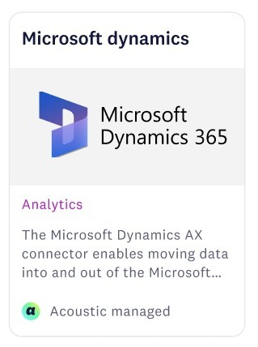
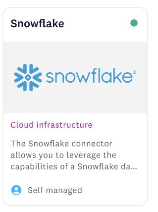
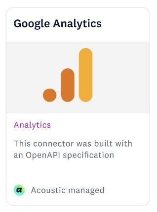
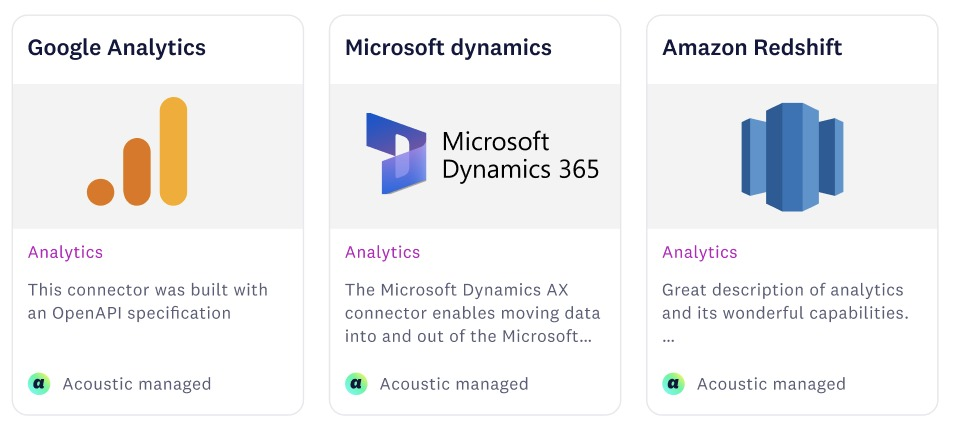
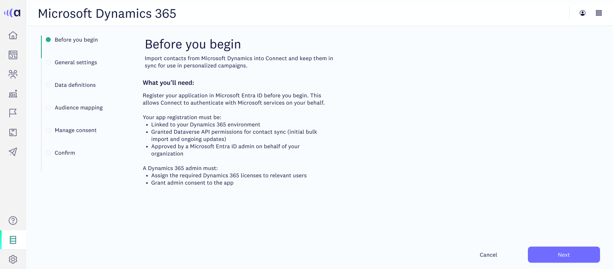
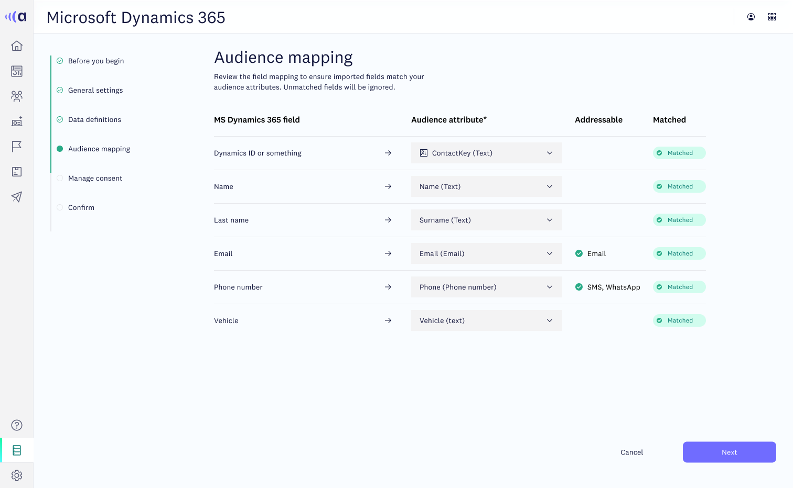
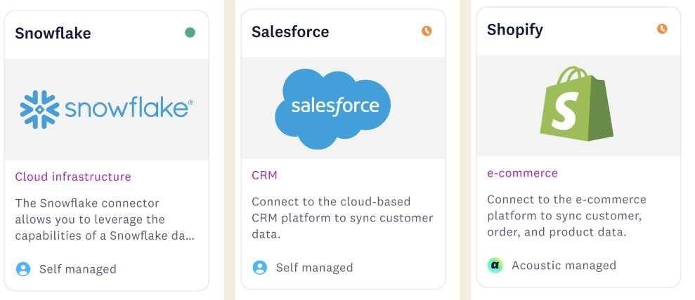

Marketplace · 40+ connectors
Plug it in, keep it running
The integrations experience, from finding a connector to setting it up once and reusing it everywhere.



The story
From a wall of tiles to a catalog that sells itself
40 → 85%
Discovery task completion
100%
Template adoption with 3+ integrations
40+
Active connectors
The situation
Customers wanted their marketing tools talking to Acoustic, but setup felt intimidating and every new integration meant starting from scratch.
The task
Design the whole experience for 40+ connectors in 10 weeks: how people find one, set it up, and manage it over time. If it felt painful, we'd lose customers.
What I did
I built a brand-first catalog with labels that say how much setup is ahead. Configuration became a guided flow with saved progress, inline validation and help written for each tool. Completed setups can be saved as templates.
What happened
Finding the right connector got far easier, and every team with several integrations now reuses templates. Sales started opening the catalog in demos as proof that Acoustic fits the tools customers already own.
Walk through it
Discover, configure, manage



